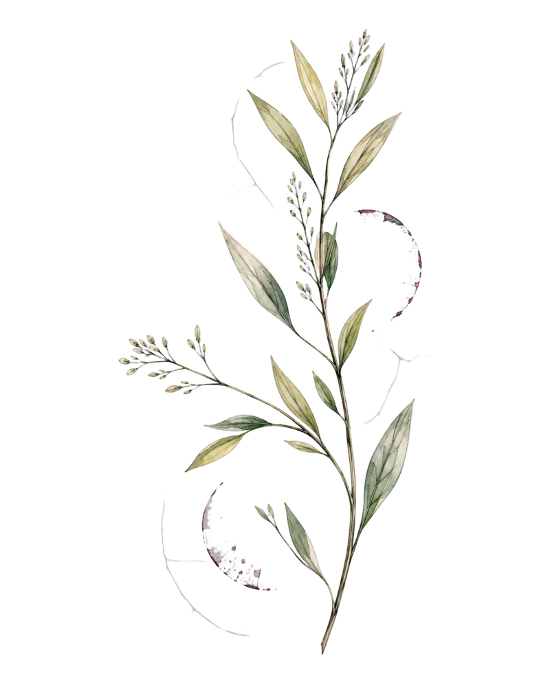
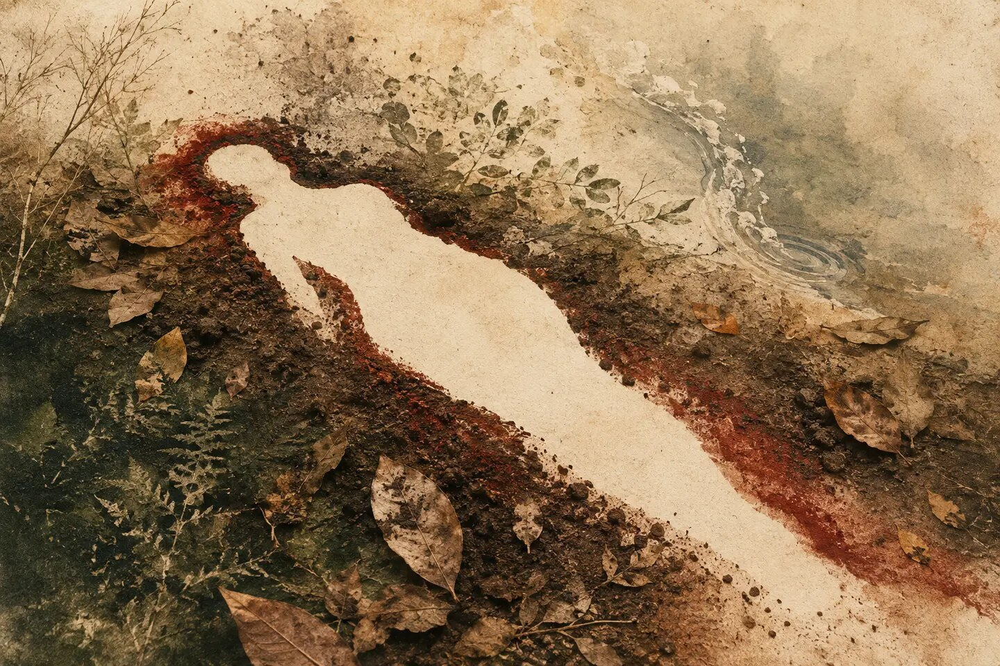
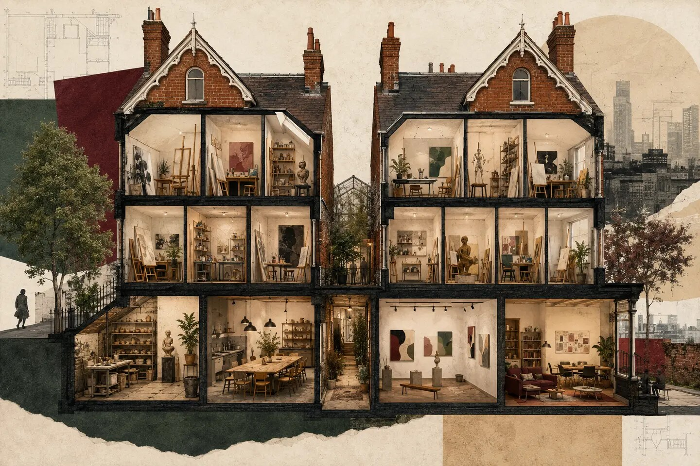
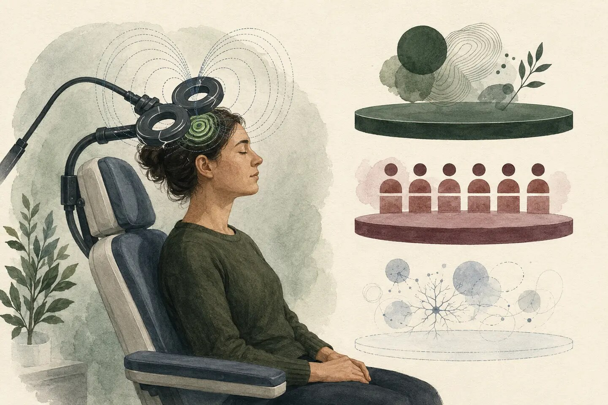
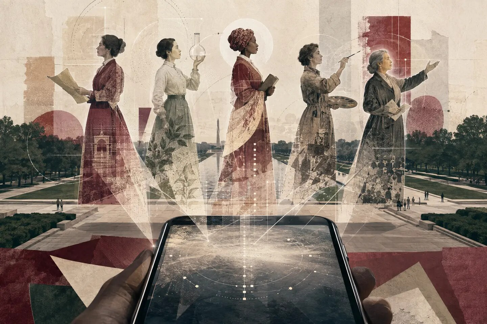

艺术人文
艺术、设计、电影、音乐、文学、建筑、戏剧、历史、哲学、宗教与文化史。
每日思想简报 · Daily Thought Briefing
每天 5 个值得停留的故事，沿着艺术人文、社会科学（包括天文学）与女性主义三条线索展开。
阅读今日简报 →✓ 5/5 与历史档案无实质重复
2026.07.14Today's Index
身体、空间与公共记忆：谁能被留下，又是谁决定我们如何看见？

Tate Modern 的英国首场大型 Ana Mendieta 展览开幕，把注意力重新放回她的身体、土地、流亡与影像实践。

Sarabande Foundation 在 Tottenham 开启新基地，把 14 间可负担工作室、展厅、咖啡馆与社区空间放进两栋历史建筑。

APA 追踪经颅磁刺激的新方向：成熟适应证正在扩大，研究者也在探索 PTSD 与进食障碍，但“有希望”不等于已经成为标准治疗。
Menopunkapalooza 把 Gen X 朋克、医疗专业人士和 750 名参与者放进同一场节日，让更年期从私密羞耻变成公共议题。

Smithsonian 用地理定位与定制插画制作 Unhidden Heroines，让女性历史从馆内展柜进入 National Mall 的现实空间。
Daily Archive
每一期都是独立入口，也回到同一张不断生长的知识地图。
Topic Index
范围明确，但允许故事跨越不同标签。
艺术、设计、电影、音乐、文学、建筑、戏剧、历史、哲学、宗教与文化史。
心理学、社会学、人类学、语言学、传播学等；也包括天文学和地理学，并关注科学发现背后的制度、技术基础设施和社会影响。
女性历史、性别、女性主义理论、健康、照护与权力结构。